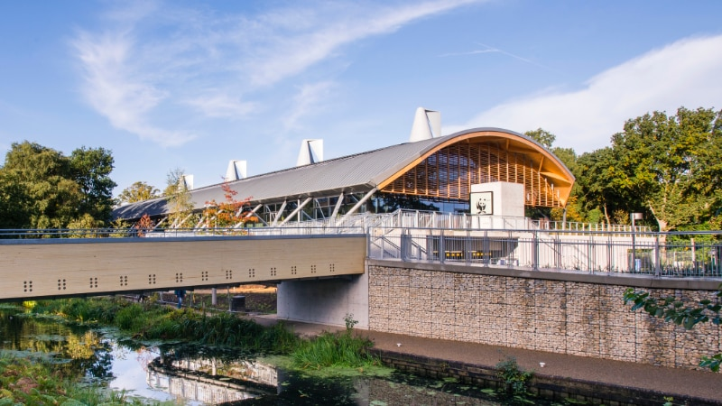
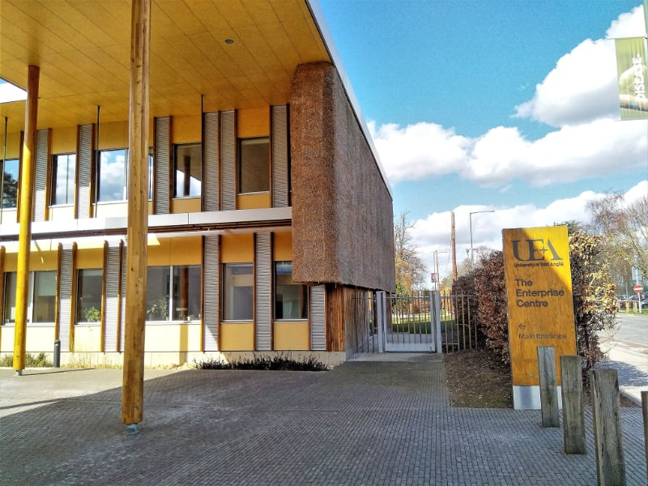
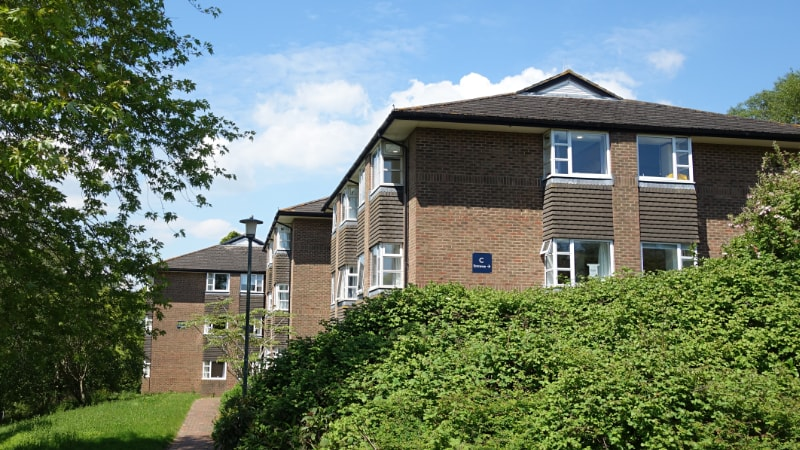
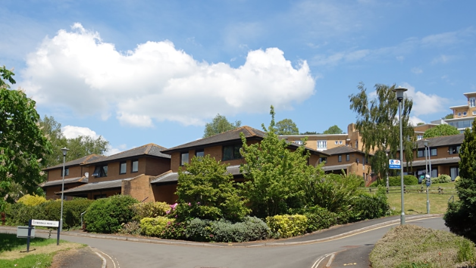
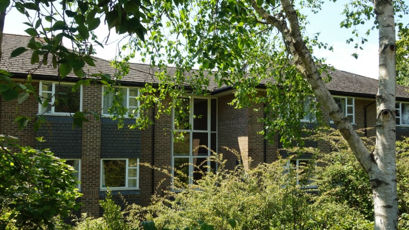
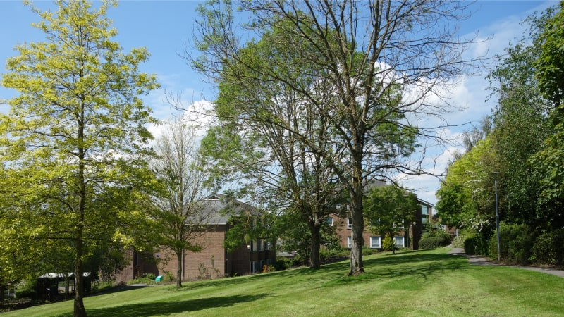
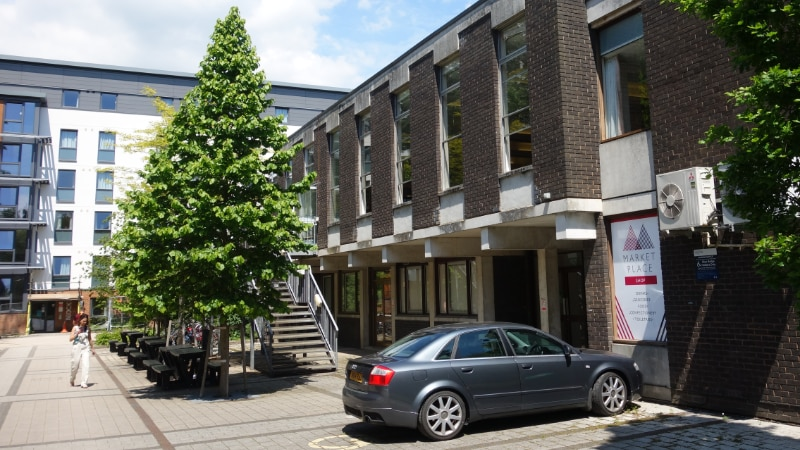

Exeter City Council has given the University of Exeter permission to demolish 30 buildings and construct 50,000m2 of new student accommodation on a fifteen acre section of the Streatham campus.
The development, which will be more than ten times the size of the new St Sidwell’s Point leisure centre, will add around 1,250 new student bedrooms to the Clydesdale, Nash and Birks Grange Village student accommodation sites on the north west corner of the campus between Cowley Bridge Road and Streatham Drive.
The Clydesdale and Nash Grove accommodation buildings, which were built between 1989 and 1992, will all be demolished and replaced with six new student blocks between three and eight storeys tall. Several will be much taller than the existing buildings.
The two storey Birks Grange Village refectory, which was built in 1965, will be demolished and replaced with a six storey student accommodation block.
Five of the fifteen Birks Grange Village accommodation blocks, which were built between 2005 and 2011, will be renovated to improve their energy efficiency, while the university Estate Services Centre will also be demolished and replaced with a three and four storey accommodation block. The Estate Services Centre will be relocated to a new 3.5 acre site on the north side of the campus near the Belvidere Meadows nature reserve.
In total, twelve accommodation blocks, three other large buildings and a range of other structures such as bike and bin stores will be demolished to make way for new construction.
The university describes the project as “an opportunity to develop an exemplar of environmentally sustainable buildings; moving well beyond statutory compliance to provide a new standard of low-carbon student accommodation”.
However, apart from one three and one five page report submitted with the university’s planning applications, which provide outline energy consumption estimates for some of the planned new buildings and summary descriptions of their Passivhaus design, no further assessment of the development’s carbon footprint has been performed.
Clydesdale, Nash and Birks Grange Village redevelopment demolition plan. Image: Willmore Iles.
Passivhaus is a twenty year-old approach to building design which primarily focusses on operational energy efficiency via use of insulation, ventilation and passive solar gain, among other approaches to reducing energy consumption.
This approach is championed by Exeter City Council: it has been mentioned in nearly 50 city council press releases since November 2018).
Passivhaus design reduces the carbon footprint of buildings by reducing their greenhouse gas emissions from energy use, but although it may involve consideration of the much wider range of climate and environmental impacts involved in construction, there is no requirement that it does.
And some construction materials which deliver very high energy performance, such as triple-glazed glass, may embody more carbon than they save, depending on the lifespan of the building.
So Passivhaus is low energy, but not necessarily low carbon: the operational energy efficiency on which it focuses represents less than a third of the carbon footprint of residential buildings.
This is how the design of the city council’s St Sidwell’s Point leisure centre can rely on extensive use of very high impact materials such as concrete and steel in its construction and still be certified Passivhaus.
As its foundation piles were being filled in 2019, the council proudly announced that 150 lorry loads of concrete were to be used in the first phase of building alone and that the site crane needed a concrete base deeper than a three storey building.
The iron and steel industry is responsible for 11% of global carbon dioxide emissions, and concrete is the most destructive material on earth: if the cement industry were a country it would be the world’s third largest carbon dioxide emitter after the US and China.
In contrast, whole life carbon assessment addresses the embodied and operational impacts of construction processes, including refurbishment, across the spectrum from raw materials extraction through transport, processing, assembly and use to the re-use, recovery and recycling of materials at the end of a building’s life.
It also addresses site preparation and facilitation works such as the treatment of hazardous materials and the demolition of existing buildings.
The Royal Institute of Chartered Surveyors (RICS) published Whole life Carbon Assessment for the Built Environment in 2017. It sets out mandatory principles, regulations and supporting guidance for the interpretation and implementation of the EN 15978 methodology, a European Standard for assessing and reporting the environmental performance of a building which has also been adopted in the UK.
The Royal Institute of British Architects (RIBA) then published its guide to the RICS methodology, which it called “the most comprehensive and consistent approach available to the industry”, in 2018, and the UK Green Building Council followed with a framework definition for net zero carbon buildings in 2019. RICS launched its Building Carbon Database later the same year.
Construction carbon lifecycle diagram. Image: University of Liverpool Zero Carbon Research Institute.
Before RICS introduced this approach the principal method of assessing, rating and certifying the sustainability of buildings in the UK had been BREEAM, which has been in use for as long as Passivhaus.
Like the now-withdrawn Code for Sustainable Homes, BREEAM involves assessment against many individual criteria which, when rigorously applied, can achieve much higher environmental standards at more comprehensive scope than the Passivhaus approach.
BREEAM is sometimes criticised as being a “tick-box” exercise that can be “gamed” by expert consultants to produce high sustainability scores for projects which may not be merited. It was perceived shortcomings in systems such as BREEAM that prompted RICS to introduce its whole life carbon assessment approach.
Nevertheless BREEAM does has the advantage of very widespread adoption. 594,000 buildings have so far been BREEAM-certified in 89 countries, compared with tens of thousands of Passivhaus designs, which are primarily found in German-speaking and Scandinavian countries.
And BREEAM is regularly updated to reflect changing industry standards: in 2018 it incorporated elements of the RICS whole life carbon assessment approach.
Architect firm Gale & Snowden, which has worked with Exeter City Council on Passivhaus projects for over a decade, describes Passivhaus and BREEAM as complementary approaches, one being an energy performance standard, the other an environmental assessment methodology covering the overall environmental performance of a building.
The city council also advocates a combination of the two approaches.
However the BREEAM star ratings system only requires a score of 70% to achieve a five star “BREEAM Excellent” rating, such as the one awarded to the university’s Forum building in 2013.
A casual observer would be forgiven for presuming that this constituted top marks for sustainability, but the system reserves that accolade for its six star “BREEAM Outstanding” category, which requires a cumulative rating above 85%.
Only 1.5% of all buildings meet this standard, and only 0.3% score over 90% on the BREEAM system.
The WWF Living Planet Centre in Woking underwent a full whole life carbon assessment, the first for a building of this kind in the UK, and received a “BREEAM Outstanding” rating in 2013.
It made extensive use of timber and sourced 98% recycled steel and locally-sourced concrete with high proportions of recycled aggregate by adopting a meticulous approach to materials procurement.
However, while a focus on whole life carbon assessment has been perceived as key to achieving a “BREEAM Outstanding” rating since the 2018 update which incorporated elements of the RICS approach, the system had recently permitted very high scores for developments which nevertheless rely on high impact materials such as steel and concrete.
A 40,000m2 office building in Amsterdam described at the time as “the greenest building in the world” scored 98.36% in 2016 despite including both.
 WWF Living Planet Centre. Photo: Number 10 under Creative Commons license
While the Passivhaus approach, as its name suggests, emerged around domestic building design, its use in large projects such as the city council’s St Sidwell’s Point leisure centre has been increasing.
In this context, however, it faces the same whole life carbon assessment challenge as BREEAM’s updated scoring system: the difficulties involved in constructing large or tall buildings without relying on intensive use of concrete and steel.
Towers at the heights planned for the university’s Clydesdale, Nash and Birks Grange Village redevelopment can be constructed using cross-laminated timber, which has a tiny fraction of cement’s carbon footprint and does not need steel reinforcement.
There is an eighteen storey tower in Norway which uses this material to avoid relying on concrete or steel cores or foundations, although it does employ concrete slabs on the top seven floors.
However the use of timber in external walls in the UK is controversial because of fire safety, and has been restricted in residential buildings above six storeys by a change in building regulations since the Grenfell Tower fire.
Nevertheless, the use of timber and other organic materials which are inherently renewable, have low embodied energy and are easy to reuse or recycle appears to be the optimal route to truly low carbon building construction.
The pioneering Enterprise Centre at the University of East Anglia, which was completed six years ago, is often cited as the UK’s greenest building.
It has a timber frame, lime render and thatch cladding and is finished with recycled timber, wood wool acoustic boards and wall coverings made from hemp, nettle fabric and reeds.
Perhaps most strikingly of all, despite relying on such a high proportion of organic materials it is designed to have a minimum 100 year lifespan.
Some of the Clydesdale and Nash Grove accommodation buildings the university is proposing to demolish are less than twenty years old.
 University of East Anglia Enterprise Centre.
Photo: Nik Morris van Leiden under Creative Commons license.
The university’s Environment and Climate Emergency Working Group White Paper was published in November 2019, two years after the RICS guidance and six months after the university declared an environment and climate emergency. It says it sets out “what declaring a climate emergency should mean to the University of Exeter”.
It draws on the university’s extensive academic climate and environment expertise, as well as professional services staff at all levels, to make more than 100 detailed recommendations covering all the university’s activities.
A section on the university’s estates and buildings identifies embedded and emitted carbon and other impacts as significant issues, but while the document mentions whole life analysis five times, all but one instance is focussed on money-saving measures, mostly in the context of saving energy.
Another section on the university’s “governance structure, guiding values and accountability” nevertheless says: “At Council, and at all levels of University, the case made for spending carbon on projects should be as clear as the case for spending money, and decisions should reflect this.
“To do this the university needs to make tools available (e.g. whole life cycle analysis, environmental footprint tool) to enable decision-making and evaluation of trade-offs related to climate costs.
“In this way Vice Chancellor’s Executive Group, Council, academic and professional services staff and students can calculate and compare alternatives or off-setting options.”
The white paper also says the university’s “current policy is to construct new buildings to BREEAM Excellent as a minimum standard”, that this should be reviewed with a view to increasing standards, and that BREEAM credits should be mandatory in key areas.
It does not mention Passivhaus.
University of Exeter Environment and Climate Emergency Working Group white paper
Building design documents submitted with the Clydesdale, Nash and Birks Grange Village redevelopment application refer to the university’s white paper, saying it “makes recommendations for goals and targets, including challenging targets for reductions in carbon emissions”.
However the design documents go on, less than a month after the publication of the white paper, to say that the university’s estate team had “determined that adopting the Passivhaus methodology is the best way of achieving these targets”. No account of the basis on which this decision was made is provided.
They describe Passivhaus as “an alternative to BREEAM”, despite one being an energy performance standard and the other an assessment methodology covering the overall environmental performance of a building, and claim the university’s white paper said it “would be using the Passivhaus methodology for new build and refurbishment”.
They also claim that replacing BREEAM with Passivhaus would mean that “sustainability standards [would be] significantly increased and improved” and say Passivhaus is “a fundamental driver of the design solution” which would provide a basis for “future detailed design”.
At a meeting later that month, an Exeter City Council planning officer confirmed that the council “welcomed” this approach.
His subsequent report to the council’s planning committee echoed the university’s repeated emphasis that the scheme is “set to be the largest student accommodation project to achieve Passivhaus certification and will be an exemplar project for the university sector” but made no mention of BREEAM or RICS whole life carbon assessment.
Then, just under twelve months later, the university published its Environment Climate Emergency Policy Statement. As a higher-level document than the 55 page white paper, at just three pages, it does not mention specific buildings standards.
It does, however, say that one of the university’s seven top level policy aims is to “demonstrate compliance with all relevant legislation as a minimum, and where possible go beyond it”. It also says that, by 2025, the university intends to adopt “best practice standards” for “environmental and energy performance of buildings” and “adopt life cycle thinking and analysis in the evaluation of savings to achieve lowest environmental and carbon footprint from our actions and decisions”.
 University of Exeter Clydesdale Rise student accommodation buildings - earmarked for demolition
We asked the university whether any whole life carbon or greenhouse gas emissions assessments of the Clydesdale, Nash and Birks Grange Village redevelopment had been performed and, if not, on what basis the university is able to make development decisions which are consistent with its policies.
We also asked how it reconciles its climate science credentials and sustainability leadership claims, such as those expressed in its recent Green Futures marketing campaign, with development decisions which are not informed by such assessments.
It did not answer these questions, instead issuing the following statement: “At the end of May 2021 the University of Exeter received outline planning consent to redevelop student residences in the Clydesdale and Birks areas of the Streatham Campus. It will be one of the largest schemes in the UK to be designed and built to the Passivhaus standard.
“To date, the project has concentrated on the successful approval of the outline planning application, which agrees overall maximum developable areas and heights. In the next phase of the project we will explore the detailed internal design, the construction materials that will be used and the overall look of the buildings, including how the low carbon Passivhaus standards will be achieved.”
Clydesdale, Nash and Birks Grange Village redevelopment illustrative elevations.
Source: University of Exeter.
The city council, which is the city’s planning authority, also has climate and environment-related policies regarding the standards which Exeter developments should meet. These are laid out in the Exeter Local Plan, which is amplified by Supplementary Planning Documents and supported by other materials including masterplans.
After saying it would upgrade these policies by January this year, it has not done so, and now says it will not do so for another three years.
In December 2019 it said it would prepare a Code for Sustainable Homes, just after the university published its Environment and Climate Emergency Working Group White Paper.
This Supplementary Planning Document was supposed to set out more detail on how the council expected developers to meet the requirements of three key planning policies which relate to sustainable construction and low carbon energy in new development: CP13, CP14 and CP15. It was understood at the time that this would include raising minimum standards to much higher levels.
In particular, it was supposed to clarify core policy CP15, which says: “Proposals for development are expected to demonstrate how sustainable design and construction methods will be incorporated”.
CP15 also says: “All non-domestic development will be required to achieve BREEAM ‘Very Good’ standards increasing to ‘Excellent’ standards from 2013. Non-domestic buildings are expected to be zero carbon from 2019.”
The Code for Sustainable Homes was scheduled for adoption by January this year, but in May 2020 the council announced that it would stop work on it pending the outcome of the government’s Future Homes Standard consultation on energy efficiency requirements for new buildings.
The government consultation finished in February 2020 and the outcome was published in January this year, but until recently the council had nothing to say about it.
Exeter City Council offices on Paris Street
Earlier this month, however, the council published a timetable for the production of a new Exeter Local Plan which will replace most of the city’s existing planning policies when it is adopted.
The council expects to adopt the new local plan in June 2024, notwithstanding the uncertainty surrounding the government’s controversial planning reform proposals. This is a remarkably optimistic schedule.
Despite the new local plan taking at least three years, the council said it would scrap the planned Code for Sustainable Homes “because the [related] policies will be reviewed as part of the new local plan and because of anticipated changes to the building regulations”.
Its statement confirmed that the promised construction standards policy has suffered the same fate as the promised student accommodation and co-living policy which the city council announced in August last year but then chose not to implement during the controversial Harlequins redevelopment planning process.
The council also said that policy would have to wait for the new local plan as that is “the appropriate way to develop new policy”.
The new local plan has already been delayed by five years by the failed Greater Exeter Strategic Plan. The council could instead have spent this time developing a new Exeter Local Plan, which would almost certainly have been adopted by now, complete with policies requiring high specification whole life carbon assessments for all major development schemes.
However there are ways in which the council could have introduced such policies, and still could introduce them, without waiting for the local plan development process and causing further delay while the city’s carbon footprint continues to grow.
 University of Exeter Clydesdale Court student accommodation buildings - earmarked for demolition
All planning decisions must take what are known as “material considerations” into account. These do not carry the same weight as fully-fledged local plan policies, but can nevertheless inform development application decisions by council officers and planning committees.
The scope of what can constitute material considerations is very wide: they include the National Planning Policy Framework but also include local planning policies, other council policies and other locally-produced documents which are not formal policies. Relevant material considerations also differ for each development proposal.
The 2010 University of Exeter Streatham campus masterplan framework is an example of a local planning policy which was relevant in this case. It is this that contains the single sentence (among a hundred pages) which Exeter City Council cited to justify describing the Clydesdale area of the campus as “a brownfield site where re-development is to be expected and encouraged”.
The council’s physical activity strategy and its post-COVID economic recovery plan could constitute material considerations in planning decisions, despite not being local planning policies, as could multi-stakeholder documents such as the Greater Exeter industrial strategy and even the “Liveable Exeter” vision document, which is little more than a series of sketches and summary outlines.
The weight of material considerations is affected by the weight of evidence supporting the document in question, and the relevance of issues to which it refers. If a document refers to an issue which is material to a particular development application, it could be considered appropriate to include it in decision-making.
Manchester City Council, for example, adopted a policy on co-living in the city which it introduced as a material planning consideration on an interim basis despite itself being in the middle of a new local plan development process. The council introduced it simply by approving it at one of its meetings. The policy subsequently helped the council prioritise the city’s interests in deciding applications to build co-living blocks.
In the same way, a policy approved by Exeter City Council concerning whole life carbon assessment of construction in the city could become a material consideration in planning decisions, particularly if that policy was supported by substantive evidence.
The Net Zero Exeter 2030 plan, which was adopted by the council last year, and the evidence which underpins it, could certainly constitute material consideration in planning decisions to which its content was relevant.
There has also been debate in planning policy circles over whether the climate emergency in general could be referenced robustly in planning decisions, although it is not yet clear how much weight such references would have.
Nevertheless, when the city council adopted the Net Zero Exeter 2030 plan it did so “as council policy to inform all policy documents, plans and corporate decision making in response to the climate emergency and in pursuance of the goal to make Exeter a carbon neutral city by 2030”, exactly as the city council planning officer said in his report on the Clydesdale, Nash and Birks Grange Village redevelopment application.
 University of Exeter Clydesdale Rise student accommodation buildings - earmarked for demolition
Unfortunately, rather than setting out a commitment to require whole life carbon assessment of all development in the city, or satisfy BREEAM Outstanding criteria, the Net Zero Exeter 2030 plan only says that the city council should “refine local planning policy so that it requires the highest energy efficiency standards (e.g. passive) in all new domestic, industrial, commercial and public buildings”.
It says the council should do this by the end of 2022. As CP15 already requires all non-domestic development to be zero carbon, we should presume this aim is intended to apply to domestic buildings. However, as the new Exeter Local Plan timetable recently made clear, the council has no intention of putting such policy in place by the end of next year.
And while the Net Zero Exeter 2030 plan also says that the council could “align all statutory and non-statutory plans, policies and guidance (including the local plan and planning policies) with the ambitions of achieving net zero carbon emissions”, it does not say that it should, or define a deadline by when this would need to happen for the city to decarbonise by 2030.
The city council nevertheless recently affirmed its commitment to comprehensive policy change by expressing support for the Climate and Ecological Emergency Bill tabled in Parliament by Green Party MP Caroline Lucas. (The timing of its declaration, just before May’s local elections, was presumably a coincidence.)
Among other things, the bill, which was drafted with the help of James Dyke of the University of Exeter Global Systems Institute, aims to bind the UK to take “every possible step to avoid, limit - and where limiting is not possible - compensate for the adverse impacts of United Kingdom-generated cycles of consumption, trade and production on ecosystems and human health; including, but not limited to, the extraction of raw materials, deforestation, land degradation, pollution and waste production”.
The bill is not yet law, but it does offer standards against which the “Exeter Vision 2040”, part of the council’s corporate strategy, might usefully be measured. Including the aim to be “recognised as a leading sustainable city and global leader in addressing the social, economic and environmental challenges of climate change and urbanisation”.
 University of Exeter Nash Grove student accommodation buildings - earmarked for demolition
We asked the council why no whole life carbon or greenhouse gas emission assessments of the planned Clydesdale, Nash and Birks Grange Village redevelopment had been performed.
The council said: “There are no local or national planning policy requirements for such assessments at present. We are unaware of any other local planning authorities with adopted policies requiring them, however they are something that will be looked at through the preparation of the new local plan.”
The new London Plan, which was adopted by the Greater London Authority in March this year, includes just such a policy. And the adoption of such policies is well under way in councils around the country too.
We asked the council how it is able to make planning decisions which are consistent with its policies without such assessments.
The council said that planning applications are determined in accordance with the development plan unless material considerations, which include the National Planning Policy Framework, indicate otherwise.
It directed us towards policies CP13, CP14 and CP15 and said that the planning officer’s report on the application addresses both the development plan policies and any other relevant material considerations.
It said it “informally” encourages developers to incorporate low carbon and other sustainability principles into their schemes, which it said the university has done in relation to this scheme, and said it “already takes [these] issues seriously”.
When asked if it would like to further comment, the council said: “We would reiterate the proactive steps we are taking in striving to be a leading city in delivering sustainable and inclusive growth.
“This is repeatedly demonstrated through the council’s own development projects – including the development of St Sidwell’s Point – where the council is clearly leading by example and striving to set the tone for future low carbon developments in the city.”
 University of Exeter Birks Grange refectory buildings - earmarked for demolition
Rather than following its own policy to build at “BREEAM Excellent” or better, reaffirmed by its own academic experts less than a month before its application to redevelop the Clydesdale, Nash and Birks Grange Village student accommodation sites, the university has chosen to adopt an approach which does not cover most aspects of the environmental performance of a building.
Rather than striving to reach the standards required by “BREEAM Outstanding”, or the RICS whole life carbon assessment methodology which RIBA describes as “the most comprehensive and consistent approach available to the industry”, the university appears to be backing away from its aim to adopt “best practice standards” for “environmental and energy performance of buildings” and “life cycle thinking and analysis in the evaluation of savings to achieve lowest environmental and carbon footprint from [its] actions and decisions”.
In so doing, the university apparently intends to ignore the impact of demolishing 30 buildings, several of which are less than 20 years old, to build new accommodation blocks at heights which are difficult to construct without extensive use of carbon-intensive concrete and steel.
While some of the accommodation blocks on the development site will be refurbished to improve their energy efficiency, no rationale is offered for the decision not to approach all the existing buildings this way, other than the university’s desire to cram another 1,250 student bedrooms into this corner of the Streatham campus.
And it is doing all this with the approval of the city council, despite its own local plan policy requirement that all non-domestic development should have met the “BREEAM Excellent” standard since 2013, and been zero carbon since 2019, and the relevant material considerations set out in other council policies.
At its June scrutiny meeting the council was asked to explain the extent to which assessments of the embodied carbon emissions from new development, including emissions from demolition of properties on the development site, are taken into account when determining planning applications.
Councillor Emma Morse, the portfolio holder for city development, said that the council does not assess the carbon emissions embodied in development. She said the council does not have development plan policies relating to this area of assessment, despite the content of core policy CP15. She also said that there is no national planning policy requirement to make this type of assessment nor any national planning policy guidance relating to it.
She did not say that neither the National Planning Policy Framework nor the government’s planning practice guidance prevent local planning authorities setting such standards for development, nor developers meeting such standards in delivery.
The portfolio holder was then asked whether the council recognised that the absence of such assessment will make it difficult to achieve the Net Zero Exeter 2030 target. She deferred her answer, then replied in writing, saying that that council “is leading by example in terms of promoting sustainable, high quality development”.
University of Exeter
Decisions such as these, the detail of which is obscured behind headline claims about the scale and scope of their ambitions, tell us much more about the university’s and city’s priorities in practice than their policies do in principle.
As the Committee on Climate Change has just warned, time is running out, and every month of inaction makes it harder to get on track. The UK is neither on course to meet its carbon budgets nor its emissions targets, while irrevocable climate tipping points are approaching much faster than expected and extreme weather events are exceeding worst-case climate science scenarios.
Construction is only one of many contexts in which action is needed now. The university is not prevented from taking such action by inadequate council planning policy and should not be prevented from doing so by the indifference of its estates team to its policy commitments. The council is not limited by its failure to introduce needed policy more quickly and should, at least, be enforcing its existing policies.
In many ways the city council’s most significant powers are as local planning authority. Will it, and the university, which professes similarly world-leading climate ambitions, deliver on their existing promises then go further, as they say they will, by striving for the highest possible environmental standards in all development in which they have a hand?
The size, scale and impact of the Clydesdale, Nash and Birks Grange Village student accommodation redevelopment makes it an important test of their resolve. The university has the opportunity to bring forward detailed design proposals which go much further than those it submitted at outline application stage, and the city has the opportunity to demand that it does so. Whether either acts will speak volumes about their willingness to practice what they preach.


{kind=link}
{kind=link}